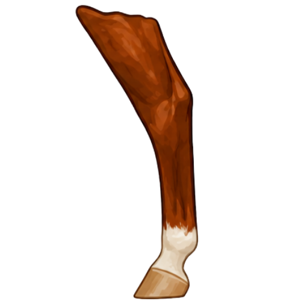

Front Leg

Learning leg markings starts with knowing the parts of a horse’s leg. This lesson covers the parts used to describe where markings sit: the hoof, pastern, fetlock, cannon, knee, and hock.
Words like coronet, pastern, fetlock, sock, and stocking are easier to learn once you know where each part of the leg is. These parts are the hoof, coronet band, pastern, fetlock, cannon, knee, and hock.
The diagrams below highlight the key parts of the horse’s legs used when identifying and describing markings.

💡 Did You Know
The chestnut is a small, hard growth on the inside of a horse’s legs. Horses have one on each of the four legs. Donkeys have them only on the front legs. Like fingerprints, no two chestnuts look exactly alike, so they have sometimes been used to help identify a horse along with its markings.
The coronet band is the area at the top of the hoof where the hoof meets the leg.
The pastern is the area of the leg between the hoof and the fetlock.
The fetlock is the joint above the pastern on the horse’s lower leg.
The cannon is the long, straight section of the lower leg above the fetlock.
The knee is the large joint on the front leg that connects the cannon to the upper leg (forearm).
The hock is the large joint on the hind leg that connects the cannon to the upper hind leg.